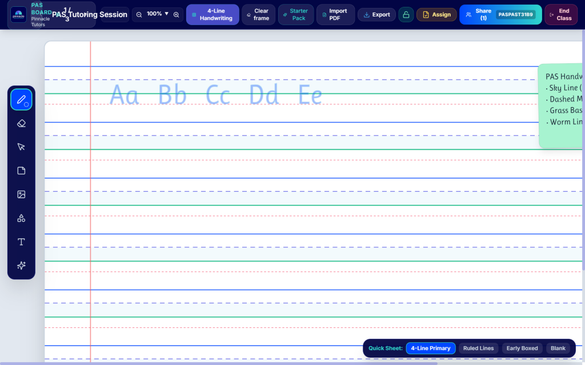

Case Study 03 • EdTech & Real-Time Collaboration
PAS Board — Real-Time Tutor Whiteboard
A real-time collaborative digital whiteboard and PDF annotation tool built specifically for live online teaching, visual explanations, and student assignment workflows.

The Problem
Teaching technical concepts remotely is much harder when you can't sketch diagrams, annotate PDFs, and share live boards with students seamlessly.
Key Capabilities
Smooth freehand drawing (perfect-freehand), multi-page PDF loading and export (pdfjs-dist, jspdf), and real-time room sync.
Frontend Stack
React 18, TypeScript, Vite, Tailwind CSS, and Lucide icons.
Real-Time Backend & Packaging
Express (server.mjs), WebSockets (ws), PeerJS for peer-to-peer connectivity, and Dockerfile containerization.